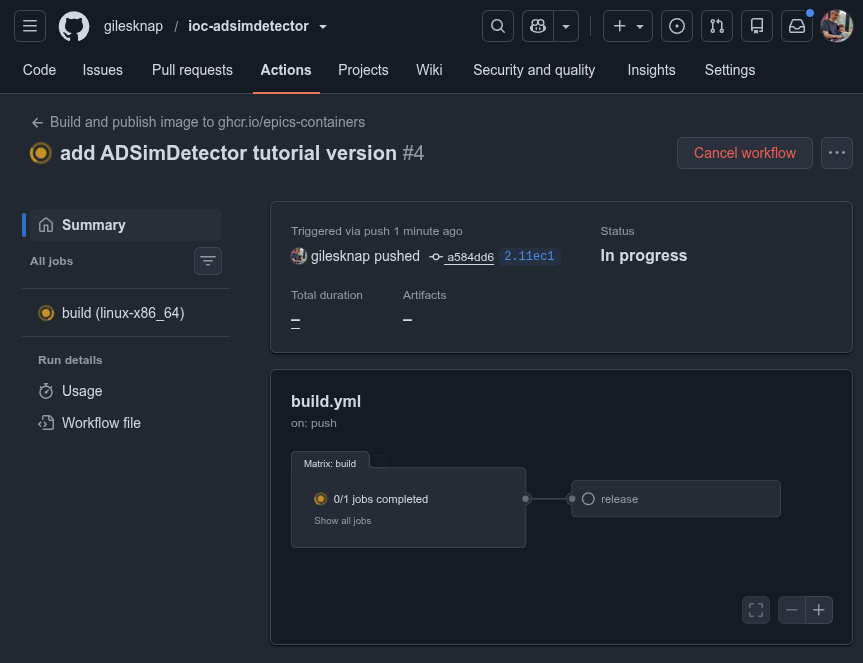
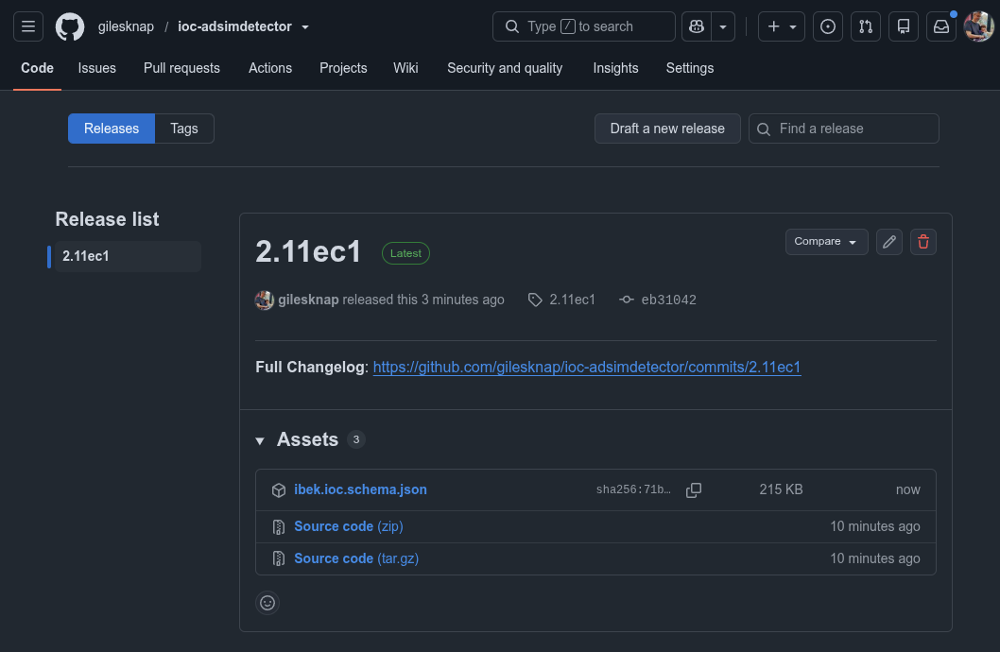

Create a Generic IOC#
In this tutorial you build a Generic IOC: a container image that wraps an EPICS support module so that IOC instances can be created from it with nothing but a YAML file. You will also embed an example instance for testing.
This is a type 2 change from Types of change.
The worked example wraps the areaDetector simulation detector
(ADSimDetector) — a camera
that generates frames internally, so it needs no hardware and no external
simulator. Substitute your own detector and support module throughout. By
convention a Generic IOC repository is named ioc-<module> (which would make
this ioc-adsimdetector); to keep the tutorial repo separate from the published
ioc-adsimdetector example we build ioc-adsim-demo here instead.
Note
A detector is a good worked example because it shows the one real twist over a plain device: an areaDetector IOC builds on the AreaDetector developer base image, which already ships ADCore and ADSupport. You add only the detector-specific module on top.
epics-containers builds support straight from public git repositories, so a
support module needs to be published with a standard EPICS layout. ADSimDetector
already is, so there is nothing to prepare. When you wrap your own module,
make sure it is public and standard first — see Edit or Create a Support Module.
Warning
Open-source your support modules before containerising where you can: it makes collaboration and maintenance far easier. Legitimate reasons to keep one private include a dependency on a proprietary library (check the licence first — you can still open-source the module and supply the library at runtime via a PVC, as DLS does for the Andor3 SDK), or code that is facility-specific or still a prototype. Internal git repositories are fully supported.
Create the Generic IOC project#
Like a beamline, a Generic IOC starts from a copier template. Create an empty
GitHub repository named ioc-adsim-demo at new, then
generate the project into it (if you do not have copier, see copier and ec):
# creates the folder ioc-adsim-demo in the current directory
copier copy https://github.com/epics-containers/ioc-template --trust ioc-adsim-demo
Answer the prompts:
Prompt |
Worked-example answer |
|---|---|
A name for this project (starts |
|
A one line description of the module |
|
Git platform hosting the repository |
|
The GitHub organisation that will contain this repo |
your GitHub account or org |
Remote URI of the repository |
(accept the default) |
Accept the defaults for any remaining prompts. Then make the first commit and push:
cd ioc-adsim-demo
git add .
git commit -m "initial commit"
git push -u origin main
Pushing triggers a GitHub Actions build of the (still empty) Generic IOC. It is not published — there is no release tag yet — but it primes the build cache so your later builds are fast. Watch it under the Actions tab.
Open the project in VSCode — but stay on the host for now; do not reopen in
the container yet. You will first point the Dockerfile at the correct base
image and build it once, so the developer container you open afterwards is
already the right image, cached:
cd ioc-adsim-demo
code .
Note
DLS users: run module load vscode before code .
Switch to the AreaDetector base image#
The Dockerfile builds the container image. Its ARG lines pick the
developer base image to build in and the runtime base image to ship.
The template defaults to the plain epics-base images and then builds a few
common modules (iocStats, pvlogging, autosave) on top.
For an areaDetector IOC, point DEVELOPER at the AreaDetector developer base
instead. It is built on ioc-asyn and already contains ADCore, ADSupport,
asyn and the common modules:
ARG RUNTIME=${REGISTRY}/epics-base${IMAGE_EXT}-runtime:7.0.10ec2
ARG DEVELOPER=${REGISTRY}/ioc-areadetector${IMAGE_EXT}-developer:3.14ec3
Delete the redundant support module builds#
Because the base image already ships asyn and the common modules
(iocStats, pvlogging, autosave), you can delete their per-module
COPY/RUN lines from the Dockerfile.
This first build contains no support beyond what the base image already ships and should build quite quickly. You will add the detector module next.
Build the image and open the devcontainer#
With the base image set, build the developer image on the host so you can watch the full log — VSCode otherwise hides it behind a progress notification. The AreaDetector base is large, so the first build takes a few minutes; the layers are cached for every build after that:
./build
./build calls podman to build the container image. Once it succeeds,
reopen the project in its developer container — it reuses the image you just
built, so it opens straight away:
Ctrl-Shift-P-> Dev Containers: Reopen in Container
Tip
If you ever have problems opening a devcontainer
try the Rebuild option (Ctrl-Shift-P -> Dev Containers: Rebuild
Container). The rebuild is still fast because the image layers are cached.
All the work below happens inside this container.
Fork the ibek-support submodule#
New modules need recipes, which live in ibek-support — a submodule shared by
all ioc-* projects. It is curated, so you work from a fork (open a pull
request later if your recipe is generally useful).
Fork it at epics-containers/ibek-support.
Copy the fork’s HTTPS Code URL and point the submodule at it:
cd /workspaces/ioc-adsim-demo
git submodule set-url ibek-support <YOUR FORK HTTPS URL>
git submodule update
cd ibek-support
git fetch
git checkout main # work from your fork's main branch
git remote -v # confirm origin is your fork
cd ..
Important
Use the HTTPS URL, not SSH — CI clones have no SSH keys. HTTPS reads fine; to
push, tell git to swap in SSH by adding this to your ~/.gitconfig:
[url "ssh://git@github.com/"]
insteadOf = https://github.com/
Rebuild the devcontainer (Ctrl-Shift-P -> Dev Containers: Rebuild Container) for this to take effect inside it.
Add a support definition#
The recipe builds the binary; a support definition lets instances describe
themselves in YAML instead of hand-writing st.cmd and ioc.subst. (You can
still supply those files by hand — the Generic IOC accepts both.) Defining
parameters in YAML means a schema-aware editor validates each instance as you
type it, and your services repo’s CI re-checks it on push.
In the same folder create ADSimDetector.ibek.support.yaml:
# yaml-language-server: $schema=https://github.com/epics-containers/ibek/releases/download/3.0.1/ibek.support.schema.json
module: ADSimDetector
entity_models:
- name: simDetector
description: Creates a simulation detector
parameters:
P:
type: str
description: Device Prefix
R:
type: str
description: Device Suffix
PORT:
type: id
description: Port name for the detector
TIMEOUT:
type: str
default: "1"
description: Timeout
ADDR:
type: str
default: "0"
description: Asyn Port address
WIDTH:
type: int
default: 1280
description: Image Width
HEIGHT:
type: int
default: 1024
description: Image Height
DATATYPE:
type: int
default: 1
description: Datatype
BUFFERS:
type: int
default: 50
description: Maximum number of NDArray buffers for plugin callbacks
MEMORY:
type: int
default: 0
description: Max memory to allocate (0 = unlimited)
post_init:
- type: text
value: |
# THIS IOC WAS GENERATED AS PART OF AN epics-container TUTORIAL
# SEE https://epics-containers.github.io/main/tutorials/generic_ioc.html
pre_init:
- type: text
value: |
# simDetectorConfig(portName, maxSizeX, maxSizeY, dataType, maxBuffers, maxMemory)
simDetectorConfig("{{PORT}}", {{WIDTH}}, {{HEIGHT}}, {{DATATYPE}}, {{BUFFERS}}, {{MEMORY}})
databases:
- file: simDetector.template
args:
P:
R:
PORT:
TIMEOUT:
ADDR:
pvi:
yaml_path: simDetector.pvi.device.yaml
ui_macros:
P:
R:
pv: true
pv_prefix: $(P)$(R)
Each entity_model declares the parameters an instance may set, the database
templates to instantiate, and any iocShell lines to add (pre_init runs
simDetectorConfig before iocInit). Values are Jinja templates, so you can
combine parameters.
The pvi: block points at a PVI device description that PVI turns into an
auto-generated Phoebus screen. Hand-writing one is ~6 KB of GUI layout, so reuse
the stock version rather than typing it out. You deleted it earlier, but it is
still in the submodule’s git history, so restore just that one file:
cd /workspaces/ioc-adsim-demo/ibek-support
git checkout HEAD -- ADSimDetector/simDetector.pvi.device.yaml
Note
TODO: Auto generation of PVI device descriptions from the module DB and screens is under development. For now, we copy the stock one from the submodule.
Important
The support definition file must end in .ibek.support.yaml. ansible.sh
symlinks it into /epics/ibek-defs, where ibek collects every support
definition into the schema used to validate instances. Re-run ansible.sh to
register it (it is idempotent, so re-running is safe):
ansible.sh ADSimDetector
We have added new support since the IOC binary was last built, so rebuild it:
cd /epics/ioc
make
Test with an example instance#
To exercise the Generic IOC you need an instance — and you already have a perfect
one: the bl01t-ea-cam-01 instance in your t01-services repo, which you have
driven throughout the earlier tutorials. Now you can test it against the image
you just built yourself. The simulation detector generates frames internally, so
no external simulator is required. Its ioc.yaml already carries a local
schema line from the earlier tutorials, so your editor validates it as-is.
Select the instance, build and run it:
ibek dev instance /workspaces/t01-services/services/bl01t-ea-cam-01
cd /epics/ioc
make
./start.sh
Note
During startup you may see an error like:
ERROR: Record 'BL01T-EA-CAM-01:STAT:TSAcquiring' not found
This is benign and will be fixed soon — the IOC still starts normally.
Warning
If instead you see an error like:
Input tag 'ADSimDetector.simDetector' found using 'type' does not match any of the expected tags:
your support definition is not registered. Re-run ansible.sh ADSimDetector to
symlink the .ibek.support.yaml into /epics/ibek-defs, then try again.
The IOC should start up and the output should end with:
iocRun: All initialization complete # THIS IOC WAS GENERATED AS PART OF AN epics-containers TUTORIAL # SEE https://epics-containers.github.io/main/tutorials/generic_ioc.html epics>
To iterate on the instance you do not need to rebuild the binary — edit
/workspaces/t01-services/services/bl01t-ea-cam-01/config/ioc.yaml, stop the IOC
with Ctrl-D, and run ./start.sh again. (Rebuild with make only after
changing the set of support modules.)
To see what ibek generated, look in /epics/runtime (the expanded startup
script and database) and /epics/ibek-defs (the registered support
definitions). When a build fails, see Debugging Generic IOC Builds.
Note
DLS users: builder beamlines can convert existing builder XML instances into
ibek YAML with builder2ibek. See the
builder2ibek documentation.
Add the module to the Dockerfile#
The recipe works inside the devcontainer, but the published image is built by
CI from the Dockerfile, which does not yet know about the detector. Now that
the recipe exists, add its COPY/RUN pair below the base-image ARGs:
COPY ibek-support/ADSimDetector/ ADSimDetector
RUN ansible.sh ADSimDetector
Each module is built by copying its ibek-support/<module> folder and running
ansible.sh <module>. That script applies the ibek-support recipe that clones
the module from upstream, builds it with standard EPICS steps, and records its
dbds and libs for the IOC link.
Note
The per-module COPY/RUN pairs look repetitive, but they maximise the build
cache hit rate — editing one recipe does not force every module to rebuild.
Publish the Generic IOC#
Commit your ibek-support recipe (on a branch) and the IOC project, then push:
cd /workspaces/ioc-adsim-demo/ibek-support
git checkout -b add-adsimdetector
git add .
git commit -m "re-author ADSimDetector support module"
git push -u origin add-adsimdetector
cd ..
git add .
git commit -m "add ADSimDetector tutorial version"
git push # a tutorial may push to main; real projects use a PR
Note
Version naming convention for ioc-xxx generic IOC releases.
We use 2.11ec1 below meaning that the primary support module inside this
generic IOC is 2.11 (i.e. ADSimDetector Support module version). With
ec1 meaning this is the first epics-containers generic IOC published
against that support module version.
The push triggers a CI image build (watch the Actions tab). To publish to
GHCR, cut a release: on the repo’s Releases tab choose Create a new
release, pick a tag such as 2.11ec1, click Generate release notes, then
Publish release.

The build.yml workflow running on the ioc-adsim-demo Actions tab after
the push — the matrix build job compiles the image, then the release job
publishes it.#
CI then builds and pushes the image, which appears under the repo’s
Packages as ghcr.io/<org>/ioc-adsim-demo-runtime.

The resulting 2.11ec1 release for ioc-adsim-demo, with the published
ibek.ioc.schema.json schema attached as a release asset.#
Note
If the release job fails with Resource not accessible by integration, go to
Settings -> Actions -> General -> Workflow Permissions and select Read and
write permissions.
Next steps#
You now have a published ioc-adsim-demo image.
Author Your Own Runtime Pattern — author your own runtime support pattern (the runtime-vendoring mirror of the build-time work you just did here).
As an exercise, add an instance that uses this image to your
bl01tbeamline and run it withdocker compose up -d(see Deploy the services).